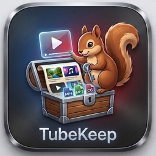

YouTube 오프라인 라이브러리
가볍고 빠른 macOS 메뉴바 앱
macOS 14+ · Apple Silicon
yt-dlp 기반 안정적인 다운로드, 큐 관리, 채널 일괄 다운로드
그리드/목록 뷰, 검색/정렬/필터, 채널별 보관함
자막 기반 AI 영상 요약, 챕터 생성, Q&A, 마인드맵
H.264 최적화, 자막 오버레이, 트랜스코딩 캐시
로컬 AI 음성 인식으로 자막 없는 영상도 자동 자막 생성
영상 자막을 2인 대화형 팟캐스트로 자동 생성
TubeKeep이 유용하셨다면 커피 한 잔의 여유를 선물해 주세요 ☕
Buy Me a Coffee